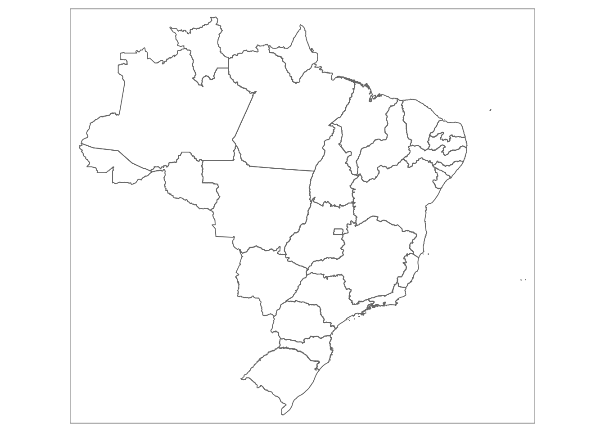
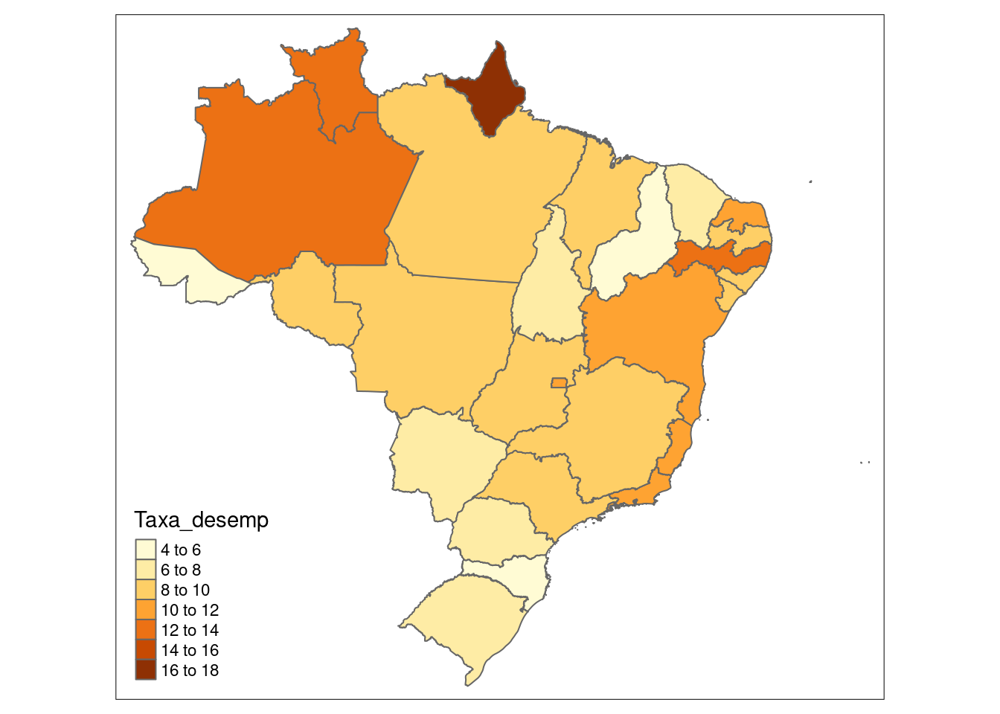
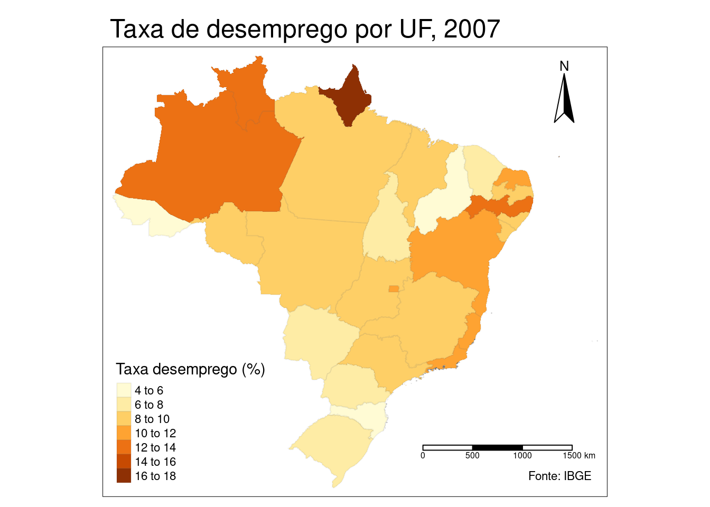
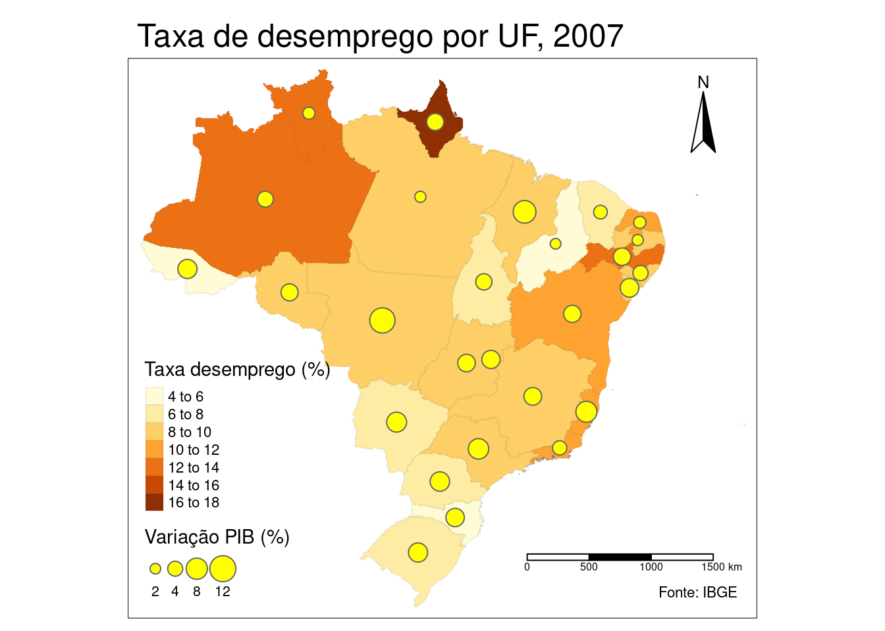

3 Módulo III
3.1 Acesso a Bancos de Dados relacionais com dbplyr
3.1.1 Introdução
O conteúdo desse capítulo foi adaptado a partir da vignette de dbplyr e do artigo Databases using R de Edgar Ruiz, autor do pacote e integrante da RStudio. dbplyr permite combinar a fácil gramática de manipulação de dados fornecida por dplyr e o acesso a bancos de dados relacionais SQL sem precisarmos utilizar efetivamente comandos SQL.
Usar bancos de dados é inevitável para aqueles cuja parte do trabalho é analisar dados. A esta altura, como utilizadores da linguagem R, o instinto nos leva a adotar um approach com as bases de dados do mesmo modo com o qual faríamos a leitura de um arquivo de dados .txt ou .csv: nos tentaríamos ler os dados todos de uma vez ou partes dele até atpe formar todo o dataset. O objetivo seria “voltar” ao banco de dados o mínimo possível, de modo que para isso, nossas queries extrairiam o máximo de dados possível. Depois disso, nós passaríamos vários ciclos analisando aqueles dados salvos na memória de nosso computador. Seguiríamos mais ou menos o seguinte esquema:
 Fonte: Databases using R, Edgar Ruiz
Fonte: Databases using R, Edgar Ruiz
Essa abordagem tem alguns problemas:
o volume de dados com que teríamos que trabalhar seria muito grande. Por isso, passaríamos alguns momentos pensando em como minimizar o consumo de recursos e o tempo para chegarmos ao subset dos dados que realmente precisamos para trabalhar;
para economizar recursos, optaríamos por utilizar diretamente um cliente externo de SQL, trabalhar os dados o máximo possível para então extrairmos os que nos interessam e só depois utilizar o R;
precisaríamos conhecer a fundo SQL para fazermos o máximo de consultas possível usando um “client” do SQL Server por exemplo. Salvaríamos os diferentes scripts para que conseguíssemos repetir as consultas novamente;
Qual seria então a melhor abordagem?
 Fonte: Databases using R, Edgar Ruiz
Fonte: Databases using R, Edgar Ruiz
Com dbplyr, a tarefa de acessar bancos de dados relacionais seria EXTREMAMENTE otimizada, porque:
1º) Você não precisa conhecer sintaxe de SQL para acessar os dados. Basta saber R e ter uma leve noção de SQL e você já poderá fazer um número considerável de manipulações nos dados;
2º) Você somente precisará do RStudio e não mais de um cliente externo de SQL para fazer as queries;
3º) Os códigos que você precisaria na primeira abordagem caírão pela metade com a segunda
4º) Ao invés de passar horas pensando em qual base de dados você realmente precisa importar, poderemos analisar os dados dentro do servidor SQL;
5º) Ao invés de usar memória do seu computador, você vai usar a engine do servidor SQL, porque
dbplyrem conjunto comdplyrvai enviar as queries para o servidor;- Manipular dados com comandos de R (e mais ainda com
dplyr) é muito mais fácil do que manipular os dados com comandos de SQL. Então, você poderá investigar e manipular os dados de forma muito mais fácil apenas com R para só ao final salvar o resultado no seu computador
- Manipular dados com comandos de R (e mais ainda com
Antes de começarmos é necessário que você instale e carregue os seguintes pacotes: DBI e dbplyr. DBI é um backend que permite ao dplyr se comunicar com vários tipos de bancos de dados SQL utilizando o mesmo código. No entanto, ao instalarmos e carregarmos dbplyr automaticamente também o será o pacote DBI.
# install.packages("dbplyr")
library(dbplyr)Além de dbplyr (e DBI), nós precisaremos de um backend ou driver específico para o tipo de servidor SQL que vamos acessar. Os mais comuns são:
- RMySQL conecta a MySQL e MariaDB;
- RPostgreSQL conecta a Postgres e Redshift;
- RSQLite incorpora uma base de SQLite embutida (muito útil para treinarmos);
- odbc conecta a váriás bases de dados comerciais (SQL Server, por exemplo) utilizando o open conectivity protocol;
- biquery conecta ao BigQuery do Google.
Essas backends estão implementados como pacotes do R também.
Para acessar os dados do IPEA, utilizaremos o backend odbc, uma vez que o servidor é o SQL Server ou MS SQL Server. Maiores detalhes sobre como conectar e exemplos de queries contra essas bases de dados serão passados em aula.
Para os exemplos desta apostila, utilizaremos RSQlite, porque teremos que emular uma base de dados tipo SQL.
3.1.2 Conectando a um database
Para podermos trabalhar com uma base de dados junto com dplyr, primeiro devemos estabelecer uma conexão com esta base, usando DBI::dbConnect(). Criamos assim um objeto de conexão dentro do R que fará a ligação em nossa sessão no RStudio e o anco de dados.
# install.packages("RSQLite")
library(dplyr)
con <- DBI::dbConnect(drv = RSQLite::SQLite(), path = ":memory:")O argumento drv de DBI::dbConnect() pode variar de database para database, mas o primeiro argumento é sempre o driver do tipo de banco de dados ao qual você irá se conectar. Seria RSQLite::SQLite() para SQLite, RMySQL::MySQL() para MySQL, RPostgreSQL::PostgreSQL() para PostgreSQL, odbc::odbc() para SQL Server e bigrquery::bigquery()* para Google BigQuery. SQLite somente precisa de mais um outro argumento: o caminho para a base de dados. No nosso caso, nós usamos a string especial [:memory:] que fará com que SQLite construa uma base de dados temporária na memória de nosso computador.
Contudo, a maioria das databases não “vivem” em um arquivo, mas sim em um servidor. Isso significa que na vida real seu código seria mais parecido com:
con <- DBI::dbConnect(RMySQL::MySQL(),
host = "database.ipea",
user = "treinamento",
password = rstudioapi::askForPassword("Database password")
)DICA: Na vida real, ao criarmos o objeto de conexão com o servidor relacional de verdade, você veria uma aba de conexões no RStudio, com os respectivos schemas e/ou tabelas presentes no servidor. É como se fosse um Global Environment do banco de dados:
Aba Connections do RStudio
A base de dados temporária que criamos anteriormente não possui qualquer tabela de dados ainda. Começaremos, então, por copiar o tibble tb_ibama, usando a função copy_to(). Embora esta não seja a maneira mais indicada de colocar dados em uma database, é bastante útil e fácil para utilizarmos em demonstrações:
Caso você não possua mais o tibble, vamos refrescar sua memória:
library(readr)
tb_ibama <- read_csv(file="https://raw.githubusercontent.com/allanvc/book_IADR-T/master/datasets/PA%20GF%202017%20jan-jun_editada.csv",
col_types = cols(
X1 = col_double(),
TIPO_GF = col_character(),
STATUS_GF = col_character(),
UF_REMETENTE = col_character(),
MUNICÍPIO_REMETENTE = col_character(),
TIPO_DESTINO = col_character(),
CEPROF_DESTINATÁRIO = col_character(),
UF_DESTINATÁRIO = col_character(),
MUNICÍPIO_DESTINATÁRIO = col_character(),
N_AUTORIZAÇÃO = col_character(),
PROCESSO = col_character(),
EMISSAO = col_integer(),
NOME_CIENTÍFICO = col_character(),
PRODUTO = col_character(),
VOLUME = col_double(),
UNID = col_character(),
PRECO_TOTAL = col_double()
)
)
# tb_ibama$STATUS_GF[1:50000] <- rep("NÃO VERIFICADO", 50000)
#
# tb_ibama2 <- mutate(tb_ibama,
# preco_unidade = PRECO_TOTAL / VOLUME,
# preco_unidade_vezes_1000 = preco_unidade * 1000
# )Feito isso, podemos adicionar o tibble contendo os dados do IBAMA para o nosso Banco de Dados relacional fictício:
copy_to(con, tb_ibama, "tb_ibamaDB",
temporary = FALSE,
indexes = list(
"UF_REMETENTE",
"MUNICÍPIO_REMETENTE",
"UF_DESTINATÁRIO",
"MUNICÍPIO_DESTINATÁRIO"
)
)A função copy_to() possui alguns argumentos adicionais que nos permitem fornecer índices para a tabela. Nós, então, criamos índices que nos permitirão rapidamente processar os dados por UF_REMETENTE, MUNICÍPIO_REMETENTE, uf_DESTINATÁRIO e MUNICÍPIO_DESTINATÁRIO. Criar os índices de escrita é um ponto chave para uma boa performance da base de dados ao enviarmos queries. No entanto, está fora do escopo deste curso.
Uma vez que copiamos os dados para o servidor, podemos referenciar (ainda não estamos importando) essa tabela no R usando a função tbl(), que extrai a tabela chamada "tb_ibamaDB" do database.
tb_ibama_db <- tbl(con, "tb_ibamaDB")Se imprimirmos a referência recém criada, veremos que ela se parece com um tibble, embora seja retratada como uma ista no Global Environment.
tb_ibama_db ## # Source: table<tb_ibamaDB> [?? x 17]
## # Database: sqlite 3.39.1 []
## X1 TIPO_GF STATUS_GF UF_REMETENTE MUNICÍPIO_REMETENTE TIPO_DESTINO CEPROF_DESTINATÁRIO UF_DESTINATÁRIO
## <dbl> <chr> <chr> <chr> <chr> <chr> <chr> <chr>
## 1 40644 GF1 RECEBIDO PA Santarém EMPREENDIMENTO… XXXX PA
## 2 153879 GF1 RECEBIDO PA Alenquer EMPREENDIMENTO… XXXX PA
## 3 66847 GF1 RECEBIDO PA Rurópolis EMPREENDIMENTO… XXXX PA
## 4 319645 GF3I RECEBIDO PA Tucuruí EMPREENDIMENTO… <NA> BA
## 5 19190 GF3 RECEBIDO PA Paragominas EMPREENDIMENTO… XXXX PA
## 6 317951 GF2 RECEBIDO PA Breu Branco EMPREENDIMENTO… XXXX PA
## 7 201275 GF3I RECEBIDO PA Benevides EMPREENDIMENTO… <NA> BA
## 8 275969 GF3I RECEBIDO PA Tucuruí EMPREENDIMENTO… <NA> BA
## 9 158094 GF3I RECEBIDO PA Moju EMPREENDIMENTO… <NA> SE
## 10 181537 GF1 RECEBIDO PA Santarém EMPREENDIMENTO… XXXX PA
## # ℹ more rows
## # ℹ 9 more variables: MUNICÍPIO_DESTINATÁRIO <chr>, N_AUTORIZAÇÃO <chr>, PROCESSO <chr>, EMISSAO <int>,
## # NOME_CIENTÍFICO <chr>, PRODUTO <chr>, VOLUME <dbl>, UNID <chr>, PRECO_TOTAL <dbl>A única diferença é a referência de que os dados estão em um banco de dados SQLite.
3.1.3 Gerando queries
Para interagir com um banco de dados nós geralmente usamos SQL - Structured Query Language. SQL tem mais de 40 anos e é usado em praticamente todas as bases de dados que existem. O objetivo de dbplyr é automaticamente gerar códigos em SQL para que nós não sejamos forçados a utilizá-los. No entanto, dbplyr não faz tudo que uma linguagem SQL faz. Ele foca na declarativa SELECT e derivados, o que consideramos suficiente para o escopo desse curso.
Veja como, na maioria das vezes, não precisamos saber nada de SQL e podemos continuar utilizando os verbos de dplyr com os quais já estamos familiarizados.
tb_ibama_db %>% select(TIPO_GF:UF_REMETENTE, UF_DESTINATÁRIO, VOLUME)## # Source: SQL [?? x 5]
## # Database: sqlite 3.39.1 []
## TIPO_GF STATUS_GF UF_REMETENTE UF_DESTINATÁRIO VOLUME
## <chr> <chr> <chr> <chr> <dbl>
## 1 GF1 RECEBIDO PA PA 2.30
## 2 GF1 RECEBIDO PA PA 1.26
## 3 GF1 RECEBIDO PA PA 0.651
## 4 GF3I RECEBIDO PA BA 2.45
## 5 GF3 RECEBIDO PA PA 2.31
## 6 GF2 RECEBIDO PA PA 25.5
## 7 GF3I RECEBIDO PA BA 3.98
## 8 GF3I RECEBIDO PA BA 1.70
## 9 GF3I RECEBIDO PA SE 4.21
## 10 GF1 RECEBIDO PA PA 2.52
## # ℹ more rowstb_ibama_db %>% filter(VOLUME > 1)## # Source: SQL [?? x 17]
## # Database: sqlite 3.39.1 []
## X1 TIPO_GF STATUS_GF UF_REMETENTE MUNICÍPIO_REMETENTE TIPO_DESTINO CEPROF_DESTINATÁRIO UF_DESTINATÁRIO
## <dbl> <chr> <chr> <chr> <chr> <chr> <chr> <chr>
## 1 40644 GF1 RECEBIDO PA Santarém EMPREENDIMENTO… XXXX PA
## 2 153879 GF1 RECEBIDO PA Alenquer EMPREENDIMENTO… XXXX PA
## 3 319645 GF3I RECEBIDO PA Tucuruí EMPREENDIMENTO… <NA> BA
## 4 19190 GF3 RECEBIDO PA Paragominas EMPREENDIMENTO… XXXX PA
## 5 317951 GF2 RECEBIDO PA Breu Branco EMPREENDIMENTO… XXXX PA
## 6 201275 GF3I RECEBIDO PA Benevides EMPREENDIMENTO… <NA> BA
## 7 275969 GF3I RECEBIDO PA Tucuruí EMPREENDIMENTO… <NA> BA
## 8 158094 GF3I RECEBIDO PA Moju EMPREENDIMENTO… <NA> SE
## 9 181537 GF1 RECEBIDO PA Santarém EMPREENDIMENTO… XXXX PA
## 10 187630 GF3 RECEBIDO PA Paragominas EMPREENDIMENTO… XXXX PA
## # ℹ more rows
## # ℹ 9 more variables: MUNICÍPIO_DESTINATÁRIO <chr>, N_AUTORIZAÇÃO <chr>, PROCESSO <chr>, EMISSAO <int>,
## # NOME_CIENTÍFICO <chr>, PRODUTO <chr>, VOLUME <dbl>, UNID <chr>, PRECO_TOTAL <dbl>tb_ibama_db %>%
group_by(UF_DESTINATÁRIO) %>%
summarise(vol_medio_por_UF = mean(VOLUME))## # Source: SQL [?? x 2]
## # Database: sqlite 3.39.1 []
## UF_DESTINATÁRIO vol_medio_por_UF
## <chr> <dbl>
## 1 AL 3.06
## 2 AM 894.
## 3 BA 2.94
## 4 CE 3.99
## 5 DF 4.93
## 6 ES 3.48
## 7 GO 5.13
## 8 MA 5.27
## 9 MG 5.35
## 10 MS 5.42
## # ℹ more rowsNo entanto, no longo prazo é altamente recomendado que você aprenda pelo menos o básico de SQL. SQL é uma skill bastante importante para qualquer cientista de dados ou pessoas que lidam com dados rotineiramente.
A diferença mais importante entre dataframes comuns e queries a bancos de dados remotos é que nosso código R é traduzido para linguagem SQL e executado na database, não no R. Quando trabalhamos com databases o dplyr tenta ser o mais preguiçoso possível. O dplyr se vale de um conceito bastante utilizado no R, que é o lazy evaluation:
Ele nunca traz dados para o R a não ser que explicitamente solicitemos que ele faça isso;
Ele “atrasa” fazer qualquer tarefa até o último momento: ele coleta todos comandos e manda para o banco de dados em um único passo.
Veja o exemplo a seguir:
por_uf_dest_db <- tb_ibama_db %>%
group_by(UF_DESTINATÁRIO) %>%
summarise(
preco_medio = mean(PRECO_TOTAL, na.rm=TRUE),
n = n()
) %>%
arrange(desc(preco_medio)) %>%
filter(n > 100)É suprpreendente o que vamos dizer agora, mas todos esses códigos não chegam a tocar a base de dados em nenhum momento; não até que solicitemos, por exemplo fazendo um printing do objeto criado por_uf_dest_db. Somente, então, é que dplyr gera o código SQL e solicita os resultados da base de dados no servidor SQL. Ainda sim, ele tenta minimizar o que será impresso, trazendo apenas algumas linhas e não tudo. Vea:
por_uf_dest_db## # Source: SQL [?? x 3]
## # Database: sqlite 3.39.1 []
## # Ordered by: desc(preco_medio)
## UF_DESTINATÁRIO preco_medio n
## <chr> <dbl> <int>
## 1 PR 14828. 366
## 2 SC 9661. 280
## 3 RS 5473. 143
## 4 SP 3420. 1580
## 5 MG 3209. 1573
## 6 GO 2802. 418
## 7 SE 2666. 854
## 8 MA 2434. 736
## 9 RJ 2425. 770
## 10 TO 2169. 143
## # ℹ more rowsPor de trás dos panos, dbplyr/dplyr está traduzindo o código em R para código SQL. Se você quiser ver (e aprender) o código SQL que está sendo enviado ao servidor, use show_query():
por_uf_dest_db %>% show_query()## <SQL>
## SELECT `UF_DESTINATÁRIO`, AVG(`PRECO_TOTAL`) AS `preco_medio`, COUNT(*) AS `n`
## FROM `tb_ibamaDB`
## GROUP BY `UF_DESTINATÁRIO`
## HAVING (COUNT(*) > 100.0)
## ORDER BY `preco_medio` DESCPara aqueles que são mais familiazrizados com SQL, o código acima provavelmente não seria o que você escreveria, mas ele cumpre a missão. Veja a vignette("SQL-translation").
Mesmo com dbplyr/dplyr, nós ainda faremos algumas iterações e tentativas até descobrir o que realmente vamos precisar dos dados. No entanto, o faremos de forma muito mais rápida. Uma vez que soubermos exatamente nosso objetivo, podemos usar collect() para trazer todos os dados em um tibble (local) em nossa máquina:
por_uf_dest_final <- por_uf_dest_db %>% collect()
por_uf_dest_final## # A tibble: 19 × 3
## UF_DESTINATÁRIO preco_medio n
## <chr> <dbl> <int>
## 1 PR 14828. 366
## 2 SC 9661. 280
## 3 RS 5473. 143
## 4 SP 3420. 1580
## 5 MG 3209. 1573
## 6 GO 2802. 418
## 7 SE 2666. 854
## 8 MA 2434. 736
## 9 RJ 2425. 770
## 10 TO 2169. 143
## 11 PA 2113. 75145
## 12 RN 2053. 1581
## 13 ES 2031. 269
## 14 CE 2002. 3172
## 15 AL 1499. 2025
## 16 PB 1458. 2112
## 17 BA 1386. 4458
## 18 PE 1266. 2655
## 19 PI 1197. 1635collect() precisa que o banco de dados trabalhe e, por isso, a operação pode tomar algum tempo até ser completada. Por outro lado, dbplyr tenta evitar que você acidentalmente faça queries bem custosas computacionalmente:
Geralmente não há forma de determinar quantas linhas uma query vai retornar até que realmente a executemos. Diferente de quando estamos trabalhando com base de dados em nosso PC, o comando
nrow()sempre retornaNAao dispararmos contra bancos de dados relacionais;Como não podemos encontrar as poucas últimas linhas sem executar a query de todo os dados, não podemos usar
tail(), que imprime as \(n\) últimas linhas de um tibble ou dataframe.
nrow(por_uf_dest_db)## [1] NAtail(por_uf_dest_db)## Error in `tail()`:
## ! `tail()` is not supported on database backends.3.1.4 Referências da seção
Wickham, H.; Ruiz, E. (2019). dbplyr: A ‘dplyr’ Back End for Databases. R package version 1.4.0. URL https://CRAN.R-project.org/package=dbplyr.
____. (2020). dbplyr vignette: Introduction. URL http://dbplyr.tidyverse.org.
Ruiz, E. (2017). Databases using R. RViews-RStudio. May 05, 2017. Disponível em: https://rviews.rstudio.com/2017/05/17/databases-using-r/
3.2 Manipulação de dados com Two-table verbs - dplyr
A Análise de dados, na maioria das vezes, envolve mais de uma base de dados. Na prática, são bases de fontes distintas que contribuem para chegarmos a um resultado final. Dessa forma, precisamos de ferramentas flexiveis para combiná-las. No pacote dplyr, existem três famílias de verbos que trabalham com duas tabelas de uma vez:
mutating joins, que adicionam novas variáveis a uma tabela a partir da correspondência (matching) das linhas em outra;
filtering joins, que filtram observações de uma tabela se estas observações fazem o matching com uma observação em outra tabela;
set oeprations, que combinam observações nos datasets caso eles sejam elementos do conjunto informado.
Esses itens assumem que seus dados encontram-se no formto de tidy data, ou seja, linhas são observações e colunas são variáveis.
Todos os two-table verbs (ou funções de duas tabelas) funcionam de forma similar: os primeiros dois argumentos são x e y e fornecem as duas tabelas que desejamos comparar e combinar. O output será sempre uma nova tabela com o mesmo tipo de objeto de x.
3.2.1 Mutating joins
Mutating joins nos permitem combinar variáveis de múltiplas tabelas. Vamos utilizar alguns datasets do pacote nycflights13 que contempla os dados de 336.776 voos (tibble flights), as condições climáticas (tibble weather) e as aeronaves (tibble planes) que pousaram e decolaram de 3 aeroportos (tibble airports) de Nova York em 2013. Os dados são oriundos do US Bureau of Transportation Statistics.
Inicialmente usaremos o datase flights. Vamos separar algumas colunas do tibble original em outro. Depois tentaremos juntar os dois com base no nome da cia aérea.
library("nycflights13")
# Drop unimportant variables so it's easier to understand the join results.
flights2 <- flights %>% select(year:day, hour, origin, dest, tailnum, carrier)
flights2 %>%
left_join(airlines)## Joining with `by = join_by(carrier)`## # A tibble: 336,776 × 9
## year month day hour origin dest tailnum carrier name
## <int> <int> <int> <dbl> <chr> <chr> <chr> <chr> <chr>
## 1 2013 1 1 5 EWR IAH N14228 UA United Air Lines Inc.
## 2 2013 1 1 5 LGA IAH N24211 UA United Air Lines Inc.
## 3 2013 1 1 5 JFK MIA N619AA AA American Airlines Inc.
## 4 2013 1 1 5 JFK BQN N804JB B6 JetBlue Airways
## 5 2013 1 1 6 LGA ATL N668DN DL Delta Air Lines Inc.
## 6 2013 1 1 5 EWR ORD N39463 UA United Air Lines Inc.
## 7 2013 1 1 6 EWR FLL N516JB B6 JetBlue Airways
## 8 2013 1 1 6 LGA IAD N829AS EV ExpressJet Airlines Inc.
## 9 2013 1 1 6 JFK MCO N593JB B6 JetBlue Airways
## 10 2013 1 1 6 LGA ORD N3ALAA AA American Airlines Inc.
## # ℹ 336,766 more rows3.2.1.1 Controlando como as tabelas sofrem match nos mutating joins
Juntamente com os argumentos x e y, cada mutating join recebe também um argumento by que é utilizado como índice para fazer o matching entre as tabelas. Há algumas maneiras de especificar esse argumento.
Vejamos exemplos de como especificar o parâmetro by, utilizando algumas tabelas de nycflights13.
- 1ª forma)
NULL: o default.dplyrvai usar todas as variáveis que aparecerem nas duas tabelas. Chamamos isso de natural join. No exeplo a seguir, as tabelasflightsewheatherserão “juntadas” com base nas variáveis comuns:year,month,day,houreorigin.
flights2 %>% left_join(weather)## Joining with `by = join_by(year, month, day, hour, origin)`## # A tibble: 336,776 × 18
## year month day hour origin dest tailnum carrier temp dewp humid wind_dir wind_speed wind_gust precip
## <int> <int> <int> <dbl> <chr> <chr> <chr> <chr> <dbl> <dbl> <dbl> <dbl> <dbl> <dbl> <dbl>
## 1 2013 1 1 5 EWR IAH N14228 UA 39.0 28.0 64.4 260 12.7 NA 0
## 2 2013 1 1 5 LGA IAH N24211 UA 39.9 25.0 54.8 250 15.0 21.9 0
## 3 2013 1 1 5 JFK MIA N619AA AA 39.0 27.0 61.6 260 15.0 NA 0
## 4 2013 1 1 5 JFK BQN N804JB B6 39.0 27.0 61.6 260 15.0 NA 0
## 5 2013 1 1 6 LGA ATL N668DN DL 39.9 25.0 54.8 260 16.1 23.0 0
## 6 2013 1 1 5 EWR ORD N39463 UA 39.0 28.0 64.4 260 12.7 NA 0
## 7 2013 1 1 6 EWR FLL N516JB B6 37.9 28.0 67.2 240 11.5 NA 0
## 8 2013 1 1 6 LGA IAD N829AS EV 39.9 25.0 54.8 260 16.1 23.0 0
## 9 2013 1 1 6 JFK MCO N593JB B6 37.9 27.0 64.3 260 13.8 NA 0
## 10 2013 1 1 6 LGA ORD N3ALAA AA 39.9 25.0 54.8 260 16.1 23.0 0
## # ℹ 336,766 more rows
## # ℹ 3 more variables: pressure <dbl>, visib <dbl>, time_hour <dttm>- 2ª forma)
by = "var1"ouby = c("var1", "var2", "var3"): um vetor de caracteres. Opera como se fosse um natural join, mas utiliza somente algumas das variáveis comuns. Por exemplo,flightseplanespossuem uma variávelyear, mas elas significam coisas diferentes em cada tibbe/dataframe. Então, queremos especificar uma coluna que sabemos que significa a mesma coisa em ambos os tibbles e que possa servir de índice para o matching. Vamos usartailnumque é o número (de cauda) do avião.
flights2 %>% left_join(planes, by = "tailnum")## # A tibble: 336,776 × 16
## year.x month day hour origin dest tailnum carrier year.y type manufacturer model engines seats speed
## <int> <int> <int> <dbl> <chr> <chr> <chr> <chr> <int> <chr> <chr> <chr> <int> <int> <int>
## 1 2013 1 1 5 EWR IAH N14228 UA 1999 Fixed wi… BOEING 737-… 2 149 NA
## 2 2013 1 1 5 LGA IAH N24211 UA 1998 Fixed wi… BOEING 737-… 2 149 NA
## 3 2013 1 1 5 JFK MIA N619AA AA 1990 Fixed wi… BOEING 757-… 2 178 NA
## 4 2013 1 1 5 JFK BQN N804JB B6 2012 Fixed wi… AIRBUS A320… 2 200 NA
## 5 2013 1 1 6 LGA ATL N668DN DL 1991 Fixed wi… BOEING 757-… 2 178 NA
## 6 2013 1 1 5 EWR ORD N39463 UA 2012 Fixed wi… BOEING 737-… 2 191 NA
## 7 2013 1 1 6 EWR FLL N516JB B6 2000 Fixed wi… AIRBUS INDU… A320… 2 200 NA
## 8 2013 1 1 6 LGA IAD N829AS EV 1998 Fixed wi… CANADAIR CL-6… 2 55 NA
## 9 2013 1 1 6 JFK MCO N593JB B6 2004 Fixed wi… AIRBUS A320… 2 200 NA
## 10 2013 1 1 6 LGA ORD N3ALAA AA NA <NA> <NA> <NA> NA NA NA
## # ℹ 336,766 more rows
## # ℹ 1 more variable: engine <chr>Note que ao juntar todas as colunas de ambos os tibbles, dplyr acrescenta um sufixo à segunda variável year.
- 3ª forma)
by = c("var1" = "var3"): um vetor de caracteres com nomes: . Isto vai fazer o matching da variávelvar1na tabelaxcom a variávelvar3na tabelay. As variáveis da tabela de origemxserão usadas no output.
Cada voo tem uma origem e um aeroporto de destino. Então precisamos especificar em qual dessas variáveis do dataset flight queremos fazer o matching com a coluna faa do dataset airports.
flights2 %>% left_join(airports, c("dest" = "faa"))## # A tibble: 336,776 × 15
## year month day hour origin dest tailnum carrier name lat lon alt tz dst tzone
## <int> <int> <int> <dbl> <chr> <chr> <chr> <chr> <chr> <dbl> <dbl> <dbl> <dbl> <chr> <chr>
## 1 2013 1 1 5 EWR IAH N14228 UA George Bush Interco… 30.0 -95.3 97 -6 A Amer…
## 2 2013 1 1 5 LGA IAH N24211 UA George Bush Interco… 30.0 -95.3 97 -6 A Amer…
## 3 2013 1 1 5 JFK MIA N619AA AA Miami Intl 25.8 -80.3 8 -5 A Amer…
## 4 2013 1 1 5 JFK BQN N804JB B6 <NA> NA NA NA NA <NA> <NA>
## 5 2013 1 1 6 LGA ATL N668DN DL Hartsfield Jackson … 33.6 -84.4 1026 -5 A Amer…
## 6 2013 1 1 5 EWR ORD N39463 UA Chicago Ohare Intl 42.0 -87.9 668 -6 A Amer…
## 7 2013 1 1 6 EWR FLL N516JB B6 Fort Lauderdale Hol… 26.1 -80.2 9 -5 A Amer…
## 8 2013 1 1 6 LGA IAD N829AS EV Washington Dulles I… 38.9 -77.5 313 -5 A Amer…
## 9 2013 1 1 6 JFK MCO N593JB B6 Orlando Intl 28.4 -81.3 96 -5 A Amer…
## 10 2013 1 1 6 LGA ORD N3ALAA AA Chicago Ohare Intl 42.0 -87.9 668 -6 A Amer…
## # ℹ 336,766 more rowsflights2 %>% left_join(airports, c("origin" = "faa"))## # A tibble: 336,776 × 15
## year month day hour origin dest tailnum carrier name lat lon alt tz dst tzone
## <int> <int> <int> <dbl> <chr> <chr> <chr> <chr> <chr> <dbl> <dbl> <dbl> <dbl> <chr> <chr>
## 1 2013 1 1 5 EWR IAH N14228 UA Newark Liberty Intl 40.7 -74.2 18 -5 A Ameri…
## 2 2013 1 1 5 LGA IAH N24211 UA La Guardia 40.8 -73.9 22 -5 A Ameri…
## 3 2013 1 1 5 JFK MIA N619AA AA John F Kennedy Intl 40.6 -73.8 13 -5 A Ameri…
## 4 2013 1 1 5 JFK BQN N804JB B6 John F Kennedy Intl 40.6 -73.8 13 -5 A Ameri…
## 5 2013 1 1 6 LGA ATL N668DN DL La Guardia 40.8 -73.9 22 -5 A Ameri…
## 6 2013 1 1 5 EWR ORD N39463 UA Newark Liberty Intl 40.7 -74.2 18 -5 A Ameri…
## 7 2013 1 1 6 EWR FLL N516JB B6 Newark Liberty Intl 40.7 -74.2 18 -5 A Ameri…
## 8 2013 1 1 6 LGA IAD N829AS EV La Guardia 40.8 -73.9 22 -5 A Ameri…
## 9 2013 1 1 6 JFK MCO N593JB B6 John F Kennedy Intl 40.6 -73.8 13 -5 A Ameri…
## 10 2013 1 1 6 LGA ORD N3ALAA AA La Guardia 40.8 -73.9 22 -5 A Ameri…
## # ℹ 336,766 more rows3.2.1.2 Tipos de mutating joins
Há 4 tipos de mutating join, que diferem pelo comportamento nas linhas em que não ocorre o matching entre as bases.
Vamos criar dois dataframes e depois veremos exemplos de cada caso.
library(dplyr)
(df1 <- data_frame(x = c(1, 2), y = 2:1))## Warning: `data_frame()` was deprecated in tibble 1.1.0.
## ℹ Please use `tibble()` instead.
## This warning is displayed once every 8 hours.
## Call `lifecycle::last_lifecycle_warnings()` to see where this warning was generated.## # A tibble: 2 × 2
## x y
## <dbl> <int>
## 1 1 2
## 2 2 1# note que a função dplyr::data_frame é diferente da função data.frame do R base
(df2 <- data_frame(x = c(1, 3), a = 10, b = "a"))## # A tibble: 2 × 3
## x a b
## <dbl> <dbl> <chr>
## 1 1 10 a
## 2 3 10 ainner_join(x, y): inclui somente observações que possuem correspondência tanto emxquanto emy(ou seja, linhas iguais nos dataframes).
df1 %>% inner_join(df2)## Joining with `by = join_by(x)`## # A tibble: 1 × 4
## x y a b
## <dbl> <int> <dbl> <chr>
## 1 1 2 10 aNote que o argumento by foi suprido. Dessa forma, o comportamento da funçõ foi o default. A coluna x foi utilizada como índice para juntar os dois data frames. As linhas iguais para a variável x em ambos os datafrmaes são trazidas na íntegra (ou seja, apresentam-se todas as colunas).
left_join(x, y): inclui todas as observações emx, independente haver matching ou não entre as tabelas. Esse é o tipo de join mais usado, porque ele garante que nós não perderemos nenhuma informação da nossa tabela primáriax.
df1 %>% left_join(df2)## Joining with `by = join_by(x)`## # A tibble: 2 × 4
## x y a b
## <dbl> <int> <dbl> <chr>
## 1 1 2 10 a
## 2 2 1 NA <NA>right_join(x, y): inclui todas as observações da tabelay. É equivalente aleft_join(**y**, **x**), mas a ordenação das variáveis será diferente nesse último caso:
df1 %>% right_join(df2)## Joining with `by = join_by(x)`## # A tibble: 2 × 4
## x y a b
## <dbl> <int> <dbl> <chr>
## 1 1 2 10 a
## 2 3 NA 10 adf2 %>% left_join(df1)## Joining with `by = join_by(x)`## # A tibble: 2 × 4
## x a b y
## <dbl> <dbl> <chr> <int>
## 1 1 10 a 2
## 2 3 10 a NAfull_join(): inclui todas as observações da tabelaxe day:
df1 %>% full_join(df2)## Joining with `by = join_by(x)`## # A tibble: 3 × 4
## x y a b
## <dbl> <int> <dbl> <chr>
## 1 1 2 10 a
## 2 2 1 NA <NA>
## 3 3 NA 10 aOs left, right e full joins são conhecidos coletivamente como outer joins (ou joins externos). Quando a linha de uma tabela não possui correspondência nenhuma na outra tabel, em um outer join, as novas variáveis são preenchidas com missing values (NA).
Embora os mutating joins existam para adicionar novas variáveis, em alguns casos eles podem gerar novas observações. Se uma correspondência não é única, um join vai acrescentar linhas para todas as combinações possíveis (produto cartesiano) do matching das observações. Esta é uma observação importante, pois muitas vezes, ao realiza um join entre duas tabelas, não compreendemos o porquê de a tabela resultante do join possuir mais observações que as duas tabelas originais.
df1 <- data_frame(x = c(1, 1, 2), y = 1:3)
df2 <- data_frame(x = c(1, 1, 2), z = c("a", "b", "a"))
df1 %>% left_join(df2)## Joining with `by = join_by(x)`## Warning in left_join(., df2): Detected an unexpected many-to-many relationship between `x` and `y`.
## ℹ Row 1 of `x` matches multiple rows in `y`.
## ℹ Row 1 of `y` matches multiple rows in `x`.
## ℹ If a many-to-many relationship is expected, set `relationship = "many-to-many"` to silence this warning.## # A tibble: 5 × 3
## x y z
## <dbl> <int> <chr>
## 1 1 1 a
## 2 1 1 b
## 3 1 2 a
## 4 1 2 b
## 5 2 3 a3.2.2 Filtering joins
Filtering joins “casam” observações da mesma forma que os mutating joins, mas afetam as próprias observações e não as variáveis. Existem dois tipos de filtering joins:
semi_join()MANTÉM todas as observações emxque possuem correspondência emy;anti_join()RETIRA todas as observações emxque possuem correspondência emy.
Esses joins são muito úteis para identificar “descasamentos” entre tabelas. Por exemplos, há diversos voos no dataset flights que não possuem correspondências com relação ao tailnum no dataset planes:
flights %>%
anti_join(planes, by = "tailnum") %>%
count(tailnum, sort = TRUE)## # A tibble: 722 × 2
## tailnum n
## <chr> <int>
## 1 <NA> 2512
## 2 N725MQ 575
## 3 N722MQ 513
## 4 N723MQ 507
## 5 N713MQ 483
## 6 N735MQ 396
## 7 N0EGMQ 371
## 8 N534MQ 364
## 9 N542MQ 363
## 10 N531MQ 349
## # ℹ 712 more rowsCaso você esteja preocupado com quais observações nosso join vai fazer o matching, sugere-se iniciar com um semi_join() ou anti_join() pelo seguinte motivo: esses joins nunca duplicam as observações, eles somente removem ou as mantém no mesmo número.
df1 <- data_frame(x = c(1, 1, 3, 4), y = 1:4)
df2 <- data_frame(x = c(1, 1, 2), z = c("a", "b", "a"))
# Four rows to start with:
df1 %>% nrow()## [1] 4# And we get four rows after the join
df1 %>% inner_join(df2, by = "x") %>% nrow()## Warning in inner_join(., df2, by = "x"): Detected an unexpected many-to-many relationship between `x` and `y`.
## ℹ Row 1 of `x` matches multiple rows in `y`.
## ℹ Row 1 of `y` matches multiple rows in `x`.
## ℹ If a many-to-many relationship is expected, set `relationship = "many-to-many"` to silence this warning.## [1] 4# But only two rows actually match
df1 %>% semi_join(df2, by = "x") %>% nrow()## [1] 2Por fim, cabe fazer menção a funções que seriam úteis caso você tivesse que trabalhar com 3 ou mais tabelas. Dê uma lida em purrr::reduce() ou Reduce(), como descrito em “Advanced R”, para iterativamente combinar espandir seus conhecimentos de two-table verbs de modo a lidar com um número maior de tabelas.
O conteúdo deste capítulo foi adaptado da vignette de two-table verbs, disponível em http://dplyr.tidyverse.org/articles/two-table.html.
3.2.3 Referências da seção
Wickham H.; François, R.; Henry, L.; Müller K. (2019). dplyr: A Grammar of Data Manipulation. R package version 0.8.1. URL https://CRAN.R-project.org/package=dplyr.
Wickham H.; François, R.; Henry, L.; Müller K. (2020). dplyr vignette: Two-table. Article._ Disponível em: http://dplyr.tidyverse.org/articles/two-table.html.
Wickham, H.; Grolemund, G. (2016). R for Data Science: Import, Tidy, Transform, Visualize, and Model Data. O’Reilly Media. december 2016. 522 pages. Disponível em: htps://www.r4ds.co.nz.
3.3 Análise de dados geográficos no R
3.3.1 Introdução
Nas últimas décadas houve uma verdadeira revolução das técnicas de geocomputação. Graças a esse grande avanço, a análise de dados geográficos não se restringe mais apenas àqueles que tem acesso a hardwares e softwares caros. De certa forma, podemos dizer que o R também contribuiu para este avanço. Embora a linguagem possuísse algumas limitações referentes à geocomputação nos anos iniciais de desenvolvimento da linguagem, ultimamente diversos pacotes do R levaram a geocomputação a um novo patamar, principalmente no que diz respeito à reproducibilidade.
Enquanto os softwares baseados em Sistemas de Informações Geográficas (SIG ou GIS no inglês), que tem como disciplina base a Geografia e o foco voltado para interfaces gráficas, deixam a desejar na reproducibilidade dos mapas gerados, o R, que tem como base a Estatística e Computação por meio de linha de comando e programação, faz com que a análise geográfica de dados seja muito mais fluida e passível de reprodução por outros usuários e desenvolvedores.
Nesta seção, apresentaremos alguns dos principais pacotes e técnicas utilizadas para produção de mapas usando R.
3.3.1.1 Modelos de dados geográficos: vetor vs raster
No campo da geocomputação, precisamos saber diferenciar os dois tipos de dados geográficos principais: vetor e raster.
Dados geográficos em forma de vetor utilizam pontos, linhas e polígonos para representar um mapa. Nesse caso, as bordas dos objetos (ex: Estados, Municípios, Países) são bem definidos.
Figure 3.1: Exemplo de plot em vetor
Já os dados em formato raster dividem a superfície de um mapa em células de tamanhos constantes. Os datasets em formato raster são comumente utilizados para gerar mapas como imagens de fundo (background). Os modelos raster são utilizados praticamente desde a origem dos aparelhos e satélites de Sensoriamento Remoto.
Figure 3.2: Plot em raster: Batimetria do Golfo do México (https://geo.gcoos.org/data/topography/SRTM30PLUS.html)
Neste curso, focaremos nos modelos de dados geográficos em vetor, que é o modelo de dados predominante nas Ciências Sociais. Isso, porque os arranjos espaciais produzidos pelo homem tendem a possuir limites discretos e bem definidos. Já o modelo raster é mais utilizado em ciências ambientais ou da terra devido à utilização de dados oriundos de sensoriamento remoto.
Agora que sabemos as diferenças conceituais entre os principais modelos de dados geográficos, vamos à prática.
3.3.2 Produção de Mapas no R
3.3.2.1 Shapefiles
Shapefiles são arquivos que seguem o modelo de dados geográficos em vetor, contendo elementos gráficos em formato de ponto, linha e/ou polígonos podendo ser trabalhados juntamente com coordenadas geográficas para descrever um fenômeno específico, como tamanho de população, incidência de doenças, etc. A partir dessas informações, é possível, então, construir-se um mapa.
Um shapefile, normalmente, contém três arquivos principais .shp, .shx, .dbf. Existem diversos locais de onde você pode obter shapefiles para confecção de mapas.
Se o seu objetivo é obter shapefiles para a malha territorial brasileira, você pode obtê-las nessas três fontes:
No caso da GADM, o repositório possui tanto as shapefiles quanto arquivos em R para importação da malha terriorial de diversos países e suas subdivisões administrativas. É um repositório bastante completo e mais fácil de navegar do que o do IBGE e do IPEA.
DICA: O IPEA recentemente desenvolveu o pacote geobr, que facilita a obtenção das shapefiles diretamente pelo R.
Focaremos na demonstração de como obter shapefiles a partir do repositório do IBGE. Para qualquer outra fonte de dados, os procedimentos serão praticamente os mesmos.
3.3.2.2 Mapa da malha estadual brasileira
3.3.2.2.1 Obtenção do arquivo
Você pode obtar por realizar o download do arquivo br_unidade_da_federacao.zip, que contém as shapefiles para os estados brasileiros, diretamente do ftp do IBGE, como na imagem abaixo:
FTP Server do IBGE
No entanto, sugerimos utilizar a solução abaixo que faz tudo issoa partir do R, utilizando as funções download.file() e unzip().
# obtém arquivo zip
download.file("ftp://geoftp.ibge.gov.br/organizacao_do_territorio/malhas_territoriais/malhas_municipais/municipio_2018/Brasil/BR/br_unidades_da_federacao.zip",
destfile = 'shp_ibge_uf2018.zip') # escolhe um nome para o arquivo zip na máquina
# descompactar arquivo
unzip(zipfile = "shp_ibge_uf2018.zip",
exdir = 'shp_ibge_uf2018') # nome da pasta a ser criada para receber os arquivos do zip3.3.2.2.2 Leitura do arquivo .shp
Agora podemos ler o shapefile utilizando o pacote sf, que quer dizer simple features. Este é um termo bastante utilizado na geocomputação, pois serve para descrever como objetos do mundo real são representados no computador, principalmente objetos de cunho geográfico. O pacote sf, portanto, serve como interface para que isto possa ser feito no R. Além disso, o pacote sf facilita a integração com pacotes do tidyverse.
A princípio, a função que você mais vai utilizar do pacote sf é a st_read(), que serve justamente para ler shapefiles de modo que sejam representadas como um por um objeto de classe data.frame no R. Como na leitura de todo dataframe, a função st_read() também precisa que setemos stringsAsFactors=FALSE, para que as variáveis categóricas não sejam lidas como fatores.
# lendo arquivo .shp
shp_uf = st_read("./shp_ibge_uf2018/BRUFE250GC_SIR.shp", stringsAsFactors=FALSE)## Reading layer `BRUFE250GC_SIR' from data source
## `/home/allan/Documents/teaching/book_IADR-T/shp_ibge_uf2018/BRUFE250GC_SIR.shp' using driver `ESRI Shapefile'
## Simple feature collection with 27 features and 3 fields
## Geometry type: MULTIPOLYGON
## Dimension: XY
## Bounding box: xmin: -73.99045 ymin: -33.75118 xmax: -28.84764 ymax: 5.271841
## Geodetic CRS: SIRGAS 2000Vejamos o conteúdo deste arquivo:
shp_uf## Simple feature collection with 27 features and 3 fields
## Geometry type: MULTIPOLYGON
## Dimension: XY
## Bounding box: xmin: -73.99045 ymin: -33.75118 xmax: -28.84764 ymax: 5.271841
## Geodetic CRS: SIRGAS 2000
## First 10 features:
## NM_ESTADO NM_REGIAO CD_GEOCUF geometry
## 1 SERGIPE NORDESTE 28 MULTIPOLYGON (((-37.98248 -...
## 2 MARANHÃO NORDESTE 21 MULTIPOLYGON (((-44.48155 -...
## 3 ESPÍRITO SANTO SUDESTE 32 MULTIPOLYGON (((-29.33711 -...
## 4 AMAZONAS NORTE 13 MULTIPOLYGON (((-69.61341 -...
## 5 RORAIMA NORTE 14 MULTIPOLYGON (((-63.97805 2...
## 6 GOIÁS CENTRO-OESTE 52 MULTIPOLYGON (((-49.36953 -...
## 7 AMAPÁ NORTE 16 MULTIPOLYGON (((-53.27918 2...
## 8 RIO GRANDE DO SUL SUL 43 MULTIPOLYGON (((-49.70392 -...
## 9 PARAÍBA NORDESTE 25 MULTIPOLYGON (((-34.79576 -...
## 10 PIAUÍ NORDESTE 22 MULTIPOLYGON (((-42.91539 -...Note que além dos nomes dos Estados, da Região a que pertence e o código de geoidentificação do estado CD_GEOCUF, este dataframe especial possui uma coluna chamada geometry. Esta coluna possui os elementos vetoriais geométricos para confecção do mapa no modelo de dados vetor mencionado anteriormente.
3.3.2.2.3 Plotagem do Mapa
Para realizar a plotagem do mapa, precisaremos de outro pacote. Há diversos pacotes para plotagem de mapas no R, mas optaremos pelo pacote tmap, por entendermos ser o mais completo atualmente. Um aspecto interessante de tmap é que ele funciona com a plotagem em camadas, assim como o ggplot2 visto no Módulo 2. Podemos ajustar diversos aspectos como legendas, bordas, fronteiras, cores, etc.
Primeiramente devemos especificar o dataframe base criado a partir da leitura da shapefile, utilizando a função tm_shape(nome_data_frame). Feito isso, a plotagem dos polígonos da coluna geometry de shp_uf já pode ser feita ao acrescentarmos a camada de polígonos com tm_borders() ou tm_ploygons().
library(tmap)
tmap_options(check.and.fix = TRUE)
tm_shape(shp_uf)+
tm_borders()## Warning: The shape shp_uf is invalid. See sf::st_is_valid
# OU
# tm_shape(shp_uf)+
# tm_polygons()DICA: Pode ocorrer de alguns shapefiles do IBGE perderem a formatação dentro do R e não serem mais reconhecidos como um datatframe que contem dados espaciais, o que acarretará em um erro ao tentarmos plotar o mapa. Para retomar o tipo adequado do objeto, você pode utilizar a função st_as_sf() do pacote sf, i.e. objeto_espacial <- st_as_sf(objeto_espacial).
Muito simples fazer mapas no R, não?
3.3.2.2.4 Adicionando dados ao mapa
Normalmente, ao fazermos análises geográficas, nosso objetivo é representar algum fênomeno que ocorre no território, como por exemplo o comportamento da taxa de desemprego por UF. Normalmente esses dados vem de uma outra fonte, ou seja, estão em outra base de dados que precisa ser “juntada” ao nosso dataframe de shapefile.
Aqui será muito útil o conhecimento sobre Two table verbs e as funções de join, porque teremos que juntar o dataset que possui os dados do fenômeno que desejamos tratar separado por UF com os dados vetoriais/geométricos de plotagem para cada UF também.
Faça a leitura da incidência da taxa de desemprego por UF no Brasil para o ano de 2007 conforme o código abaixo:
library(readr)
tb_desemp_uf <- read_csv2(file="https://raw.githubusercontent.com/allanvc/book_IADR-T/master/datasets/tx_desemp_uf2007.csv")
tb_desemp_uf## # A tibble: 27 × 4
## UF Nome CO_UNID_GEO Taxa_desemp
## <chr> <chr> <dbl> <dbl>
## 1 AC Acre 1 5.8
## 2 AL Alagoas 2 8.4
## 3 AM Amazonas 1 12.2
## 4 AP Amapá 1 16.3
## 5 BA Bahia 2 10.4
## 6 CE Ceará 2 7.9
## 7 DF Distrito Federal 5 11.9
## 8 ES Espírito Santo 3 10.8
## 9 GO Goiás 5 8.2
## 10 MA Maranhão 2 8.3
## # ℹ 17 more rowsAgora devemos juntar esses dados ao dataframe contendo os os limites da malha estadual brasileira que trabalhamos anteriormente. Vamos utilizar a função left_join() de dplyr. Vamos fazer a junção das tabelas com base na coluna que contém os nomes dos Estados. Contudo, note que as colunas com os nomes possuem nomes diferentes em cada uma das bases: NM_ESTADO vs Nome. Ainda bem, que já sabemos como tratar este pequeno problema com dplyr. Se estiver em dúvida, volte ao Módulo 2.
Antes de você continuar, note também que os nomes dos estados em shp_uf estão em caixa alta, ao passo que em tb_desemp_uf estão apenas com a primeira letra maiúscula. Para contornar este problema, usaremos a função mutate() de dplyr em conjunto com a função toupper() do base R, para transformar todos os nomes da base tb_desemp_uf para caixa alta.
library(dplyr)
tb_desemp_uf <- tb_desemp_uf %>%
mutate(Nome = toupper(Nome))
shape_data_join <- left_join(shp_uf,
tb_desemp_uf,
by = c("NM_ESTADO" = "Nome")) # utilizando aula do two table verbs
shape_data_join## Simple feature collection with 27 features and 6 fields
## Geometry type: MULTIPOLYGON
## Dimension: XY
## Bounding box: xmin: -73.99045 ymin: -33.75118 xmax: -28.84764 ymax: 5.271841
## Geodetic CRS: SIRGAS 2000
## First 10 features:
## NM_ESTADO NM_REGIAO CD_GEOCUF UF CO_UNID_GEO Taxa_desemp geometry
## 1 SERGIPE NORDESTE 28 SE 2 9.8 MULTIPOLYGON (((-37.98248 -...
## 2 MARANHÃO NORDESTE 21 MA 2 8.3 MULTIPOLYGON (((-44.48155 -...
## 3 ESPÍRITO SANTO SUDESTE 32 ES 3 10.8 MULTIPOLYGON (((-29.33711 -...
## 4 AMAZONAS NORTE 13 AM 1 12.2 MULTIPOLYGON (((-69.61341 -...
## 5 RORAIMA NORTE 14 RR 1 12.1 MULTIPOLYGON (((-63.97805 2...
## 6 GOIÁS CENTRO-OESTE 52 GO 5 8.2 MULTIPOLYGON (((-49.36953 -...
## 7 AMAPÁ NORTE 16 AP 1 16.3 MULTIPOLYGON (((-53.27918 2...
## 8 RIO GRANDE DO SUL SUL 43 RS 4 7.4 MULTIPOLYGON (((-49.70392 -...
## 9 PARAÍBA NORDESTE 25 PB 2 8.5 MULTIPOLYGON (((-34.79576 -...
## 10 PIAUÍ NORDESTE 22 PI 2 4.6 MULTIPOLYGON (((-42.91539 -...Agora temos praticamente tudo pronto para plotar como a taxa de desemprego se distribuia pelos estados no ano de 2007. Para fazer com que essas informações sejam incluídas no mapa, acrescentamos uma layer ao gráfico anterior, utilizando a função tm_fill("Taxa_desemp"). Assim, o polígono de cada estado será preenchido com uma cor diferente dependendo da intensidade da taxa de desemprego verificada naquela UF. Note que nossos dados base agora são shape_data_join.
tm_shape(shape_data_join)+
tm_borders()+
tm_fill("Taxa_desemp")## Warning: The shape shape_data_join is invalid. See sf::st_is_valid
DICA: Uma vez que acrescentamos uma nova layer com tm_fill(), não poderemos utilizar tm_polygons() para traçar as fronteiras, apenas tm_borders().
3.3.2.2.5 Melhorias no mapa
Podemos melhorar ainda mais nossos mapas, acrescentando outras layers. Podemos controlar a intensidade das fronterias estaduais, o posicionamento da legenda com tm_legend(), o estilo do mapa tm_style(), exibir uma régua de escala tm_scale_bar(), uma rosa dos ventos com tm_compass() e muito mais. Sugerimos ler a documentação do pacote tmap.
mapa_desemp2007_uf <- tm_shape(shape_data_join)+
# linhas fronteiras:
tm_borders(alpha = 0.1)+
# preenchimento e título legenda:
tm_fill("Taxa_desemp", title="Taxa desemprego (%)")+
# estilo (formatação do gráfico, cores, etc):
# tm_style("classic")+
# posição da legenda:
tm_legend(position=c("left", "bottom"))+
# agulha ou rosa dos ventos (posição e tipo):
tm_compass(position=c("right", "top"), size=3, type="arrow")+
# régua de escala:
tm_scale_bar()+
# tpitulo fora da área de plotagem:
tm_layout(main.title="Taxa de desemprego por UF, 2007")+
# créditos/fonte:
tm_credits(text="Fonte: IBGE")
mapa_desemp2007_uf ## Warning: The shape shape_data_join is invalid. See sf::st_is_valid## Scale bar set for latitude km and will be different at the top and bottom of the map.
3.3.2.2.6 Acrescentando mais dados ao mapa
Com tmap, podemos acrescentar mais uma dimensão de dados ao nosso mapa, a partir de outro dataset. Imagine, por exemplo, que desejássemos plotar, além da taxa de desemprego, o % de crescimento do PIB no ano de 2007. Isso, forneceria uma melhor compreensão sobre a situação da economia de cada estado naquele ano.
Primeiro vamos ler o dataset cresc_PIB_uf2007.csv, que estão disponíveis no repositório da apostila:
tb_cresc_PIB_uf2007 <- read_csv2(file="https://raw.githubusercontent.com/allanvc/book_IADR-T/master/datasets/cresc_PIB_uf2007.csv")
tb_cresc_PIB_uf2007## # A tibble: 27 × 2
## UF var_PIB2007
## <chr> <dbl>
## 1 Espírito Santo 7.8
## 2 Pará 2.2
## 3 Rondônia 5.2
## 4 Mato Grosso do Sul 7
## 5 Mato Grosso 11.3
## 6 Pernambuco 5.4
## 7 Piauí 2
## 8 Sergipe 6.2
## 9 Ceará 3.3
## 10 Goiás 5.5
## # ℹ 17 more rowsVamos realizar o join dessa nova base com o dataset shape_data_join que já conta com os dados de polígono e taxa de desemprego para as unidades da federação. Lembre-se que as colunas referentes aos nomes dos estados em cada base possuem denominações diferentes e que os nomes do dataset do PIB não estão em caixa alta.
CUIDADO: Antes que você quebre a cabeça tentando resolver um problema, temos um detalhe na coluna UF do tibble tb_cresc_PIB_uf2007: há um espaço em branco à frente dos nomes dos estados. Resolveremos isso com mutate() + str_trim() do pacote stringr, que remove todos os espaços em branco à frente e depois do nome de uma string. O pacote stringr e a amnipulação de strings serão tratados mais profundamente no Módulo 4.
library(stringr)
tb_cresc_PIB_uf2007 <- tb_cresc_PIB_uf2007 %>%
mutate(UF = toupper(str_trim(UF)))
shape_data_join2 <- left_join(shape_data_join,
tb_cresc_PIB_uf2007,
by = c("NM_ESTADO" = "UF")) # utilizando aula do two table verbs
shape_data_join2## Simple feature collection with 27 features and 7 fields
## Geometry type: MULTIPOLYGON
## Dimension: XY
## Bounding box: xmin: -73.99045 ymin: -33.75118 xmax: -28.84764 ymax: 5.271841
## Geodetic CRS: SIRGAS 2000
## First 10 features:
## NM_ESTADO NM_REGIAO CD_GEOCUF UF CO_UNID_GEO Taxa_desemp var_PIB2007
## 1 SERGIPE NORDESTE 28 SE 2 9.8 6.2
## 2 MARANHÃO NORDESTE 21 MA 2 8.3 9.1
## 3 ESPÍRITO SANTO SUDESTE 32 ES 3 10.8 7.8
## 4 AMAZONAS NORTE 13 AM 1 12.2 4.5
## 5 RORAIMA NORTE 14 RR 1 12.1 2.6
## 6 GOIÁS CENTRO-OESTE 52 GO 5 8.2 5.5
## 7 AMAPÁ NORTE 16 AP 1 16.3 5.1
## 8 RIO GRANDE DO SUL SUL 43 RS 4 7.4 6.5
## 9 PARAÍBA NORDESTE 25 PB 2 8.5 2.2
## 10 PIAUÍ NORDESTE 22 PI 2 4.6 2.0
## geometry
## 1 MULTIPOLYGON (((-37.98248 -...
## 2 MULTIPOLYGON (((-44.48155 -...
## 3 MULTIPOLYGON (((-29.33711 -...
## 4 MULTIPOLYGON (((-69.61341 -...
## 5 MULTIPOLYGON (((-63.97805 2...
## 6 MULTIPOLYGON (((-49.36953 -...
## 7 MULTIPOLYGON (((-53.27918 2...
## 8 MULTIPOLYGON (((-49.70392 -...
## 9 MULTIPOLYGON (((-34.79576 -...
## 10 MULTIPOLYGON (((-42.91539 -...Feitos os devidos ajustes, partimos para a plotagem do mapa. ANtes, porém, precisamos pensar em qual forma geométrica usaremos para apresentação do dado de crescimento do PIB. Considerando, que utilizamos tm_fill() para a variável Taxa_desemp, podemos utilizar círculos cujo tamanho vçao variar conforme a intensidade de crescimento do PIB do estado. Fazemos isso com a função tm_bubbles(), passando o nome da variável para o argumento size.
mapa_desempvsPIB2007_uf <- tm_shape(shape_data_join2)+
# linhas fronteiras:
tm_borders(alpha = 0.1)+
# preenchimento e título legenda:
tm_fill("Taxa_desemp", title="Taxa desemprego (%)")+
# inserindo a camada que retrata o crescimento do PIB em 2007
tm_bubbles(size="var_PIB2007", col = 'yellow', title.size='Variação PIB (%)')+
# estilo (formatação do gráfico, cores, etc):
# tm_style("classic")+
# posição da legenda:
tm_legend(position=c("left", "bottom"))+
# agulha ou rosa dos ventos (posição e tipo):
tm_compass(position=c("right", "top"), size=3, type="arrow")+
# régua de escala:
tm_scale_bar()+
# tpitulo fora da área de plotagem:
tm_layout(main.title="Taxa de desemprego por UF, 2007")+
# créditos/fonte:
tm_credits(text="Fonte: IBGE")
mapa_desempvsPIB2007_uf ## Warning: The shape shape_data_join2 is invalid. See sf::st_is_valid## Scale bar set for latitude km and will be different at the top and bottom of the map.
3.3.2.2.7 Outros pacotes para geração de mapas
Embora tmap seja um pacote bastante poderoso e flexível para a geração de mapas, há diversas outras alternativas no ecosistema do R para geração tanto de mapas estáticos quanto interativos: maptools, maps, ggmap + ggplot2, cartograph, ggVis, leaflet, dentre outros.
3.3.3 Exportando dados geográficos
3.3.3.1 Escrevendo arquivos de dados vetoriais
Assim como na leitura de dados vetoriais, o pacote recomendado para se proceder a escrita de dados é o sf. A função equivalente à st_read() no que se refere à escrita de dados é st_write(). Há vários tipos de arquivos vetoriais que se pode escrever: ESRI Shapefile a mais comum (extensão de arquivo shp), GPX, KML, GeoJSON e GPKG. Normalmente, ao especificar a extensão do arquivo, st_read() já se encarrega de “advinhar” o tipo de arquivo vetorial.
Veja um exemplo, com a escrita de uma shapefile .shp:
st_write(obj = shape_data_join2, dsn = "uf_join.shp")Serão produzidos 4 arquivos com extensões .shp, .dbf, .shx e .prj. Caso st_write() não consiga reconhecer o driver adequado, você pode passá-lo como driver="ESRI Shapefile" por exemplo.
3.3.3.2 Escrevendo arquivos de figuras
O base R fornece uma série de funções que permitem salvar qualquer tipo de plot, incluindo mapas, nas mais diversas extensões de imagens. As funções são png(), jpeg(), bmp(), tiff(). Para salvar um mapa (e qualquer tipo de plot), você pode seguir a seguinte sequência:
abrir um dispositivo de plotagem com qualquer uma das funções anteriores, especificando o nome do arquivo de destino a ser criado
filenamee as dimensões da figurawidtheheight;executar um plot;
fechar o dispositivo de plotagem com
dev.off().
png(filename = "mapa_BR_UF.png", width = 500, height = 350)
tm_shape(shp_uf)+
tm_polygons()
dev.off()O pacote tmap também possui uma função para salvar os mapas criados a partir do pacote como figuras. Vamos salvar o objeto mapa_desempvsPIB2007_uf, que contém um mapa criado com o pacote tmap.
library(tmap)
tmap_save(tm = mapa_desempvsPIB2007_uf , filename = "lifeExp_tmap.png")3.3.4 Referências da seção
Battisti, I.; Smolski, F. (2019). Software R: curso avançado. Disponível em: https://smolski.github.io/livroavancado/
Lovelace, R.; Nowosad, J.; Muenchow, J. (2019). Geocomputation with R. CRS Press. Disponível em: https://geocompr.robinlovelace.net/
Pebesma, E. (2018). Simple Features for R: Standardized Support for Spatial Vector Data. The R Journal 10 (1), 439-446, https://doi.org/10.32614/RJ-2018-009.
Tennekes, M. (2018). tmap: Thematic Maps in R. Journal of Statistical Software, 84(6), 1-39. doi:10.18637/jss.v084.i06 (URL:https://doi.org/10.18637/jss.v084.i06).
3.3.5 Exercícios
- Importe, a partir do R, os datasets
tx_part_mulheres_munSP2000.csvepop_SP.csvdisponíveis no repositório git do curso, que contém respectivamente os dados da taxa de participação das mulheres no mercado de trabalho dos municípios paulistas no ano 2000 e a a população de cada município do estado de São Paulo no mesmo.
- Importe, a partir do R, os datasets
- Baixe a malha territorial do Brasil do repositório da GADM (GADM36) https://gadm.org/download_country_v3.html.
- Faça um mapa do estado de São Paulo, mostrando a distribuição da taxa de participação feminina no mercado de trabalho por município, juntamente com a população por município.